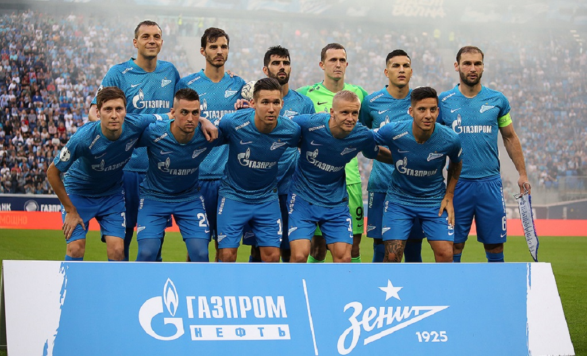
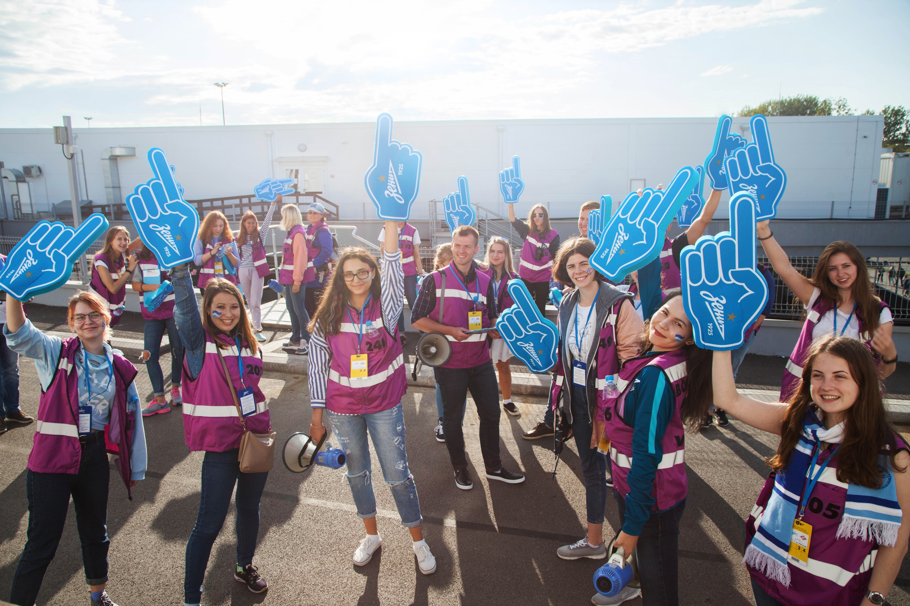

Волонтерское движение
футбольного клуба "Зенит"
Один город, одна команда, одна душа!
Волонтерское движение футбольного клуба «Зенит»
Футбольный клуб «Зенит» развивается в совершенно разных направлениях, вбирая в себя лучший мировой опыт и создавая уникальные возможности для любителей футбола. 2018 год – Год волонтера, год главного футбольного праздника – Чемпионата мира по футболу FIFA 2018 в России – это и стало главными предпосылками к созданию волонтерского движения ФК «Зенит». Волонтеры это те люди, готовые помогать, создавать праздничную атмосферу и заряжать своей энергией болельщиков. Поэтому волонтеры ФК «Зенит» не только главные помощники, а душа самой большой спортивной арены города - стадиона «Санкт-Петербург».


Волонтерское движение возобновилось с началом нового сезона 2018/2019. На матчах волонтеры помогают в камерах хранения, у турникетах при проверке билетов, осуществляют информационную поддержку зрителей на внешнем и внутреннем периметрах стадиона.
Для волонтеров клуба реализуется мотивационная программа, в которую включены образовательные и развлекательные мероприятия, возможность просмотра матчей любимой команды, сувенирная продукция, благодарственные письма, экскурсии по стадиону, посещение открытых тренировок и автограф-сессий лучших игроков команды сине-бело-голубых. Кроме того, волонтерам предоставляются такие сервисы, как горячее питание и уникальная матчевая экипировка.